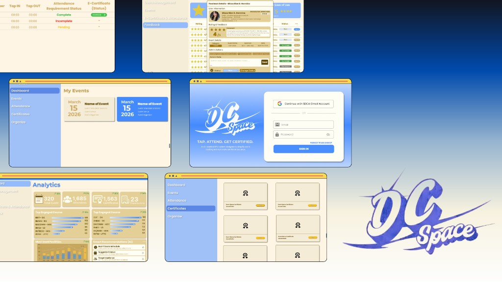
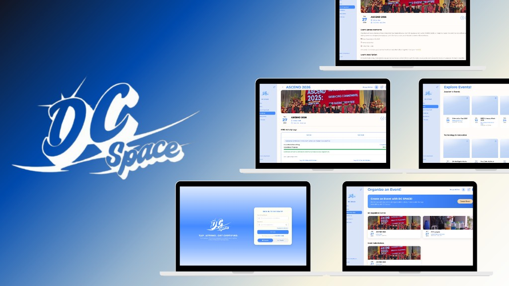
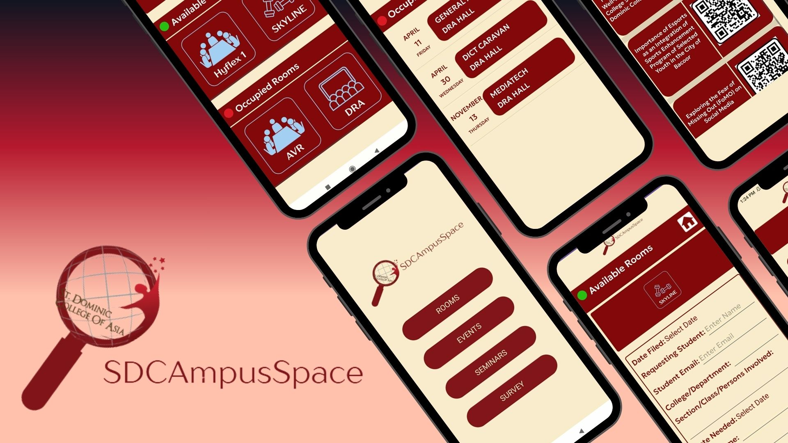
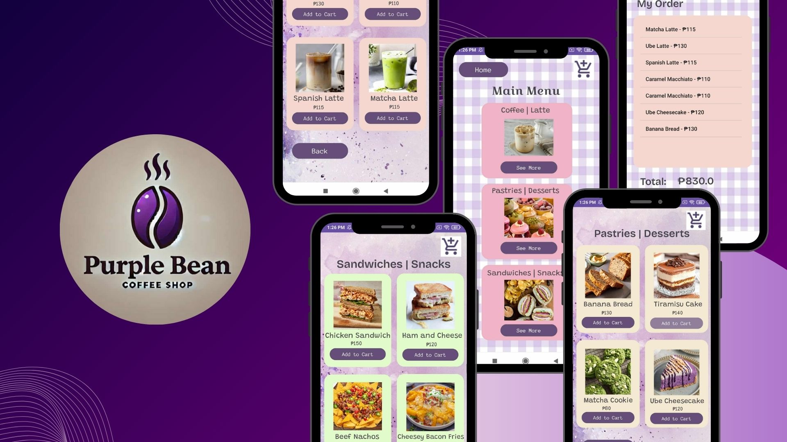
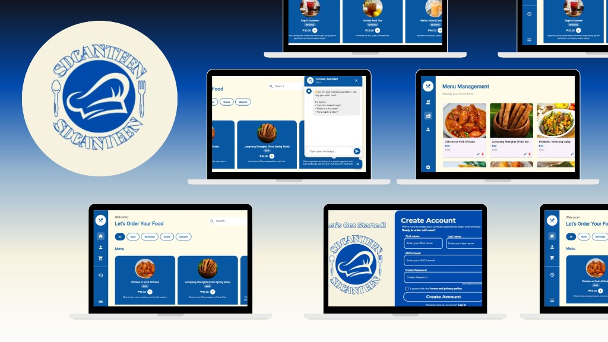

☰
Portfolio

A Web-Based IoT Event Attendance Monitoring System Using RFID Technology with Real-Time Monitoring
Description: DC Space is an IoT attendance system for seminars and campus events at St. Dominic College of Asia. Participants tap RFID-enabled ID cards on a USB reader, and attendance is recorded, stored, and shown in real time on a web dashboard—replacing slow, error-prone manual sign-in sheets.
Objectives: Build an RFID scanning node for student/faculty check-in; store and sync records in the cloud; provide a live attendance dashboard; support analytics and historical logs; and evaluate the prototype for functionality, reliability, efficiency, and usability.
Technologies / Components: USB 13.56 MHz RFID reader, institutional RFID ID cards, computer/laptop, Wi-Fi; Next.js, React, TypeScript, Tailwind CSS, Node.js, NextAuth.js, MongoDB.
My Role / Contribution: Contributed to the project documentation, including sections on project scope and limitations, system components, communication and networking, planning and development, hardware setup, and system performance.
Project Output / Result: A working prototype that passed functional, integration, and validation tests (RFID tap-in/out, login, attendance logs, and database sync). Real-time dashboard updates performed reliably in controlled testing; full live-event deployment is recommended as future work.

AI-driven Event Intelligence Platform for Predictive Crowd Management and Adaptive Event Optimization
Description: DC SPACE is a web-based capstone platform for academic and campus events at St. Dominic College of Asia. It unifies event browsing and registration, RFID tap-in/tap-out attendance, security monitoring against proxy or invalid scans, AI-assisted crowd and attendance insights, automated digital certificates, feedback collection, and AI-assisted event reporting—replacing manual sign-in sheets and disconnected certificate workflows.
Objectives: Build event management and participant engagement features; implement RFID attendance with real-time logs and security checks; develop AI event intelligence for predicted attendance, flow, and congestion insights; automate certificate and report generation from validated attendance; and evaluate the system for functionality, usability, efficiency, reliability, accuracy, and satisfaction.
Technologies / Components: USB 13.56 MHz RFID reader, institutional RFID IDs; JavaScript, HTML/CSS, Next.js, Tailwind CSS, MongoDB, Vercel, Google Gemini API; optional ESP32 testing hardware; planned integration with iRoomReserve for venue reservation data.
My Role / Contribution: Backend developer of the system.
Project Output / Result: A developed platform covering event lifecycle management, RFID attendance monitoring, certificate handling, feedback, and AI-supported analytics/reporting, with evaluation planned across end-users and IT experts using software quality characteristics (functionality, performance, usability, reliability, security, and more).

SDCAmpusSpace is a mobile application designed for students of St. Dominic College of Asia. It allows users to view available and occupied rooms, check upcoming events, and browse scheduled seminars. Students can also fill out and submit reservation forms for specific rooms and dates. Additionally, the app provides access to surveys, making campus activities more organized and accessible in one platform.

Purple Bean Coffee Shop Menu is a mobile application where customers can browse different categories like coffee, pastries, and snacks. Users can easily add items to their cart, and the app will automatically display a summary of their order along with the total price. This makes ordering quick, convenient, and organized.

SDCanteen is a smart canteen menu and ordering system built for St. Dominic College of Asia – Digital Campus. It helps students and faculty view the day’s updated menu online, place orders ahead of time, and pick up their food when ready—reducing long queues, order mix-ups, and waiting during busy hours. Canteen staff can manage incoming orders more clearly through a digital workflow, while users track order status in real time. Access is limited to SDCA accounts for security, payment is handled online via QR code, and the system is designed for on-campus pick-up rather than delivery.